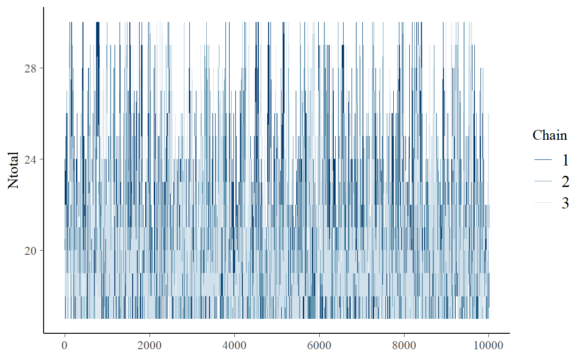

Script multioccu_script.R
1. Instalar y cargar los paquetes -
Recuerden instalar la versin de desarrollo de camtrapR
remotes::install_github("jniedballa/camtrapR")
Lo primero es cargar todas las librerias necesarias. > Recuerden que para instalar rjags necesitan instalar en su maquina el programa JAGS
library(camtrapR) # Datos de cmaras y modelos
library(rjags) # Para correr el modelo
library(SpadeR) # Riqueza Chao2
library(tidyverse) # Manipular datos
library(nimble) # LEnguaje BUGS
library(nimbleEcology) # Nimble enfocado en jerrquicos
library(bayesplot) # grficos estimaciones bayesianas
library(SpadeR) # Riqueza Chao2
library(beepr) # Opcional para avisar R termine
library(tictoc) # Opcional para tomar el tiempo de la funcin
library(extrafont) #opcional para cambiar la fuente
library(snowfall)
2. Cargar los datos -
Formato de los datos
Vamos a usar los mismos datos que del ejemplo anterior. Seguimos un procedimiento similar para cargar los datos.
# Cargamos la tabla de registros de las especies
registers <- read.csv("Data/Survey/recordTable_OC.csv")
# Cargamos la tabla de operacin de cmaras
CToperation <- read.csv("Data/Survey/CTtable_OC.csv")
# Generamos la matrz de operacin de las cmaras
camop <- cameraOperation(CTtable= CToperation, # Tabla de operacin
stationCol= "Station", # Columna que define la estacin
setupCol= "Setup_date", #Columna fecha de colocacin
retrievalCol= "Retrieval_date", #Columna fecha de retiro
hasProblems= T, # Hubo fallos de cmaras
dateFormat= "%Y-%m-%d") # Formato de las fechas
# Funcin para generar las historias de deteccin para todas las especies seleccionadas
DetHist_list <- lapply(unique(registers$Species), FUN = function(x) {
detectionHistory(
recordTable = registers, # Tabla de registros
camOp = camop, # Matriz de operacin de cmaras
stationCol = "Station",
speciesCol = "Species",
recordDateTimeCol = "DateTimeOriginal",
recordDateTimeFormat = "%d/%m/%Y",
species = x, # la funcin reemplaza x por cada una de las especies
occasionLength = 10, # Colapso de las historias a 10 as
day1 = "station", #inicie en la fecha de cada estacin
datesAsOccasionNames = FALSE,
includeEffort = TRUE,
scaleEffort = TRUE,
timeZone = "America/Mexico_City"
)}
)
# Se genera una lista con cada historia de deteccin y el esfuerzo de muestreo, ahora le colocaremos los nombres para saber a cual especie corresponde
names(DetHist_list) <- unique(registers$Species)
# Finalmente creamos una lista nueva donde estn solo las historias de deteccin
ylist <- lapply(DetHist_list, FUN = function(x) x$detection_history)
Terminaremos con el objeto ylist que cotiente todas las historias de deteccin
covariables
## Covariables
#Cargamos la base de covariables
covars <- read.csv("Data/Covs/stdcovs_OC.csv")
identical(nrow(ylist[[1]]), nrow(covars)) # Verificar que tengan el mismo nmero de filas
[1] TRUEFinalmente unimos todo en un objeto lista con los datos que requiere el modelo
# Generamos la base de datos para el modelo
data_list <- list(ylist = ylist, # Historias de deteccin
siteCovs = covars, # Covariables de sitio
obsCovs = list(effort = DetHist_list[[1]]$effort)) # agregamos el esfuerzo de muestreo como covariable de observacin
str(data_list)
List of 3
$ ylist :List of 17
..$ Conepatus leuconotus : num [1:67, 1:19] 0 NA 0 0 1 0 0 0 0 0 ...
.. ..- attr(*, "dimnames")=List of 2
.. .. ..$ : chr [1:67] "C1T2P1" "C1T2P11" "C1T2P21" "C1T4P1" ...
.. .. ..$ : chr [1:19] "o1" "o2" "o3" "o4" ...
..$ Lynx rufus : num [1:67, 1:19] 0 NA 0 0 0 0 0 0 1 0 ...
.. ..- attr(*, "dimnames")=List of 2
.. .. ..$ : chr [1:67] "C1T2P1" "C1T2P11" "C1T2P21" "C1T4P1" ...
.. .. ..$ : chr [1:19] "o1" "o2" "o3" "o4" ...
..$ Sylvilagus floridanus : num [1:67, 1:19] 1 NA 0 0 1 0 0 0 1 1 ...
.. ..- attr(*, "dimnames")=List of 2
.. .. ..$ : chr [1:67] "C1T2P1" "C1T2P11" "C1T2P21" "C1T4P1" ...
.. .. ..$ : chr [1:19] "o1" "o2" "o3" "o4" ...
..$ Urocyon cinereoargenteus: num [1:67, 1:19] 1 NA 0 0 1 0 0 0 1 0 ...
.. ..- attr(*, "dimnames")=List of 2
.. .. ..$ : chr [1:67] "C1T2P1" "C1T2P11" "C1T2P21" "C1T4P1" ...
.. .. ..$ : chr [1:19] "o1" "o2" "o3" "o4" ...
..$ Canis latrans : num [1:67, 1:19] 0 NA 0 0 0 0 0 0 1 0 ...
.. ..- attr(*, "dimnames")=List of 2
.. .. ..$ : chr [1:67] "C1T2P1" "C1T2P11" "C1T2P21" "C1T4P1" ...
.. .. ..$ : chr [1:19] "o1" "o2" "o3" "o4" ...
..$ Mephitis macroura : num [1:67, 1:19] 0 NA 0 0 0 0 0 0 0 0 ...
.. ..- attr(*, "dimnames")=List of 2
.. .. ..$ : chr [1:67] "C1T2P1" "C1T2P11" "C1T2P21" "C1T4P1" ...
.. .. ..$ : chr [1:19] "o1" "o2" "o3" "o4" ...
..$ Odocoileus virginianus : num [1:67, 1:19] 0 NA 1 0 1 0 0 0 0 0 ...
.. ..- attr(*, "dimnames")=List of 2
.. .. ..$ : chr [1:67] "C1T2P1" "C1T2P11" "C1T2P21" "C1T4P1" ...
.. .. ..$ : chr [1:19] "o1" "o2" "o3" "o4" ...
..$ Canis lupus familiaris : num [1:67, 1:19] 0 NA 0 0 0 0 0 0 0 0 ...
.. ..- attr(*, "dimnames")=List of 2
.. .. ..$ : chr [1:67] "C1T2P1" "C1T2P11" "C1T2P21" "C1T4P1" ...
.. .. ..$ : chr [1:19] "o1" "o2" "o3" "o4" ...
..$ Pecari tajacu : num [1:67, 1:19] 0 NA 0 0 0 0 0 0 0 0 ...
.. ..- attr(*, "dimnames")=List of 2
.. .. ..$ : chr [1:67] "C1T2P1" "C1T2P11" "C1T2P21" "C1T4P1" ...
.. .. ..$ : chr [1:19] "o1" "o2" "o3" "o4" ...
..$ Roedores : num [1:67, 1:19] 0 NA 0 0 1 0 0 0 0 0 ...
.. ..- attr(*, "dimnames")=List of 2
.. .. ..$ : chr [1:67] "C1T2P1" "C1T2P11" "C1T2P21" "C1T4P1" ...
.. .. ..$ : chr [1:19] "o1" "o2" "o3" "o4" ...
..$ Dasypus novemcinctus : num [1:67, 1:19] 0 NA 0 0 0 0 0 0 0 0 ...
.. ..- attr(*, "dimnames")=List of 2
.. .. ..$ : chr [1:67] "C1T2P1" "C1T2P11" "C1T2P21" "C1T4P1" ...
.. .. ..$ : chr [1:19] "o1" "o2" "o3" "o4" ...
..$ Spilogale angustigrons : num [1:67, 1:19] 0 NA 0 0 0 0 0 0 0 0 ...
.. ..- attr(*, "dimnames")=List of 2
.. .. ..$ : chr [1:67] "C1T2P1" "C1T2P11" "C1T2P21" "C1T4P1" ...
.. .. ..$ : chr [1:19] "o1" "o2" "o3" "o4" ...
..$ Bassariscus astutus : num [1:67, 1:19] 0 NA 0 0 0 0 0 0 0 0 ...
.. ..- attr(*, "dimnames")=List of 2
.. .. ..$ : chr [1:67] "C1T2P1" "C1T2P11" "C1T2P21" "C1T4P1" ...
.. .. ..$ : chr [1:19] "o1" "o2" "o3" "o4" ...
..$ Procyon lotor : num [1:67, 1:19] 0 NA 0 0 0 0 0 0 0 0 ...
.. ..- attr(*, "dimnames")=List of 2
.. .. ..$ : chr [1:67] "C1T2P1" "C1T2P11" "C1T2P21" "C1T4P1" ...
.. .. ..$ : chr [1:19] "o1" "o2" "o3" "o4" ...
..$ Capra hircus : num [1:67, 1:19] 0 NA 0 0 0 0 0 0 0 0 ...
.. ..- attr(*, "dimnames")=List of 2
.. .. ..$ : chr [1:67] "C1T2P1" "C1T2P11" "C1T2P21" "C1T4P1" ...
.. .. ..$ : chr [1:19] "o1" "o2" "o3" "o4" ...
..$ Puma yagouaroundi : num [1:67, 1:19] 0 NA 0 0 0 0 0 0 0 0 ...
.. ..- attr(*, "dimnames")=List of 2
.. .. ..$ : chr [1:67] "C1T2P1" "C1T2P11" "C1T2P21" "C1T4P1" ...
.. .. ..$ : chr [1:19] "o1" "o2" "o3" "o4" ...
..$ Nasua narica : num [1:67, 1:19] 0 NA 0 0 0 0 0 0 0 0 ...
.. ..- attr(*, "dimnames")=List of 2
.. .. ..$ : chr [1:67] "C1T2P1" "C1T2P11" "C1T2P21" "C1T4P1" ...
.. .. ..$ : chr [1:19] "o1" "o2" "o3" "o4" ...
$ siteCovs:'data.frame': 67 obs. of 11 variables:
..$ X : int [1:67] 1 2 3 4 5 6 7 8 9 10 ...
..$ Station : chr [1:67] "C1T2P1" "C1T2P11" "C1T2P21" "C1T4P1" ...
..$ Cam : chr [1:67] "MoultrieA30" "Moultrie" "MoultrieA30" "Primos" ...
..$ ...1 : num [1:67] -1.69 -1.64 -1.59 -1.54 -1.49 ...
..$ Vertcover_50: num [1:67] -0.474 0.652 -0.924 -0.924 -1.151 ...
..$ Dcrops : num [1:67] 0.677 1.462 2.219 0.46 1.172 ...
..$ MSAVI : num [1:67] 0.732 -0.867 -0.584 -0.143 0.213 ...
..$ Slope : num [1:67] -0.2196 -0.9927 -1.0259 1.4184 -0.0597 ...
..$ Cluster : num [1:67] -1.06 -1.06 -1.06 -1.06 -1.06 ...
..$ Effort : num [1:67] -0.2081 -1.4605 -0.0719 -0.8888 -0.0719 ...
..$ Dpop_G : num [1:67] -0.4261 -0.3167 -0.1805 -0.1923 -0.0948 ...
$ obsCovs :List of 1
..$ effort: num [1:67, 1:19] 0.0626 NA 0.0626 0.0626 0.0626 ...
.. ..- attr(*, "dimnames")=List of 2
.. .. ..$ : chr [1:67] "C1T2P1" "C1T2P11" "C1T2P21" "C1T4P1" ...
.. .. ..$ : chr [1:19] "o1" "o2" "o3" "o4" ...3. Modelo multi-especie -
Creando el modelo
CamtrapR permite ajustar modelos multi-especie en JAGS y Nimble (es decir en lenguaje BUGS), nosotros vamos a usar JAGS ya que la versin de Nimble aun no permite estimar parmetro N de riqueza de especies
# Usaremos la funcin ` communityModel`
# Generemos el modelo
comu_model <- communityModel(data_list, # la lista de datos
occuCovs = list(ranef = "Dcrops"), # La covariables de sitio
detCovsObservation = list(fixed = "effort"), #Covariables de observacin
intercepts = list(det = "ranef", occu = "ranef"),
augmentation = c(full = 30),# Nmero aumentado de especies
modelFile = "multmod")# Guardamos la especificacin en un archivo
summary(comu_model)
commOccu object (for JAGS)
30 species, 67 stations, 19 occasions
758 occasions with effort
Number of detections (by species): 0 - 146
Available site covariates:
X, Station, Cam, ...1, Vertcover_50, Dcrops, MSAVI, Slope, Cluster, Effort, Dpop_G
Used site covariates:
Dcrops
Available site-occasion covariates:
effort Hora de correr el modelo. En este caso no corran la funcin porque dura alrededor de 56 min
fit.commu <- fit(comu_model,
n.iter = 22000,
n.burnin = 2000,
thin = 2,
chains = 3,
cores = 3,
quiet = T
);beep(sound = 4)
# Duracin 56 min aprox
3.1 Resultados del modelo
modresult <- summary(fit.commu)[["statistics"]]
Veamos el resultado grfico
Otra gran ventaja de CamtrapR es que permite grficar de manera muy sencilla la prediccin posterior del modelo. Veamos que pasa con la ocupacin de cada especie
plot_effects(comu_model, # El modelo
fit.commu, # El objeto ajustado
submodel = "state") # el parmetro de inters
$DcropsAhora los coeficientes
plot_coef(comu_model,
fit.commu,
submodel = "state")
$DcropsRealizamos el mismo procedimiento para el submodelo de deteccin
plot_effects(comu_model,
fit.commu,
submodel = "det")
$effortplot_coef(comu_model,
fit.commu,
submodel = "det")
$effort3.2 La riqueza de especies
Lo que vinimos a buscar fue la riqueza de especies. La riqueza estimada de especies es ~20 sps
(riqueza_est <- modresult["Ntotal",])
Mean SD Naive SE Time-series SE
19.96107056 2.95338837 0.01705054 0.08235277 # Veamos el grfico de la distribucin posterior
mcmc_areas(fit.commu, # objeto jags
pars= "Ntotal", # parmetro de inters
point_est = "mean",
prob = 0.95) # intervalos de credibilidad
La estimacin no se ve muy bien, hay que verificar los trace plots.
Debera verse como un cesped, muy probablemente necesitamos muchas mas iteraciones para este modelo.
mcmc_trace(fit.commu, pars = "Ntotal")

gd <- as.data.frame(gelman.diag(fit.commu, multivariate = FALSE)[[1]])
gd["Ntotal",]
Point est. Upper C.I.
Ntotal 1.001335 1.002693La prueba de Gelman-Rubin debe ser ~1 para considerar que hay buena convergencia. Aunque tenemos un valor bueno para Ntotal, hay varios valores de omega con NA, eso puede estar causando los problemas.
Ajustamos nuestro primer modelo de multi-especie.
Recordemos que N es la riqueza estimada a un rea mayor de nuestro muestreo (rea que no conocemos)
N depende de si cumplimos los supuestos del rea - El muestreo es aleatorio. El rea de muestreo debe representar la regin - En caso contrario N representa el nmero de especies un rea hipottica con las mismas condiciones - Si la regin es pequea, N puede ser sobre-estimada
y de las especies - Datos de insectos no sirven para predecir aves - Prediccin a especies que sean detectados de manera similar con la metodologa usada.
.footnote[Guillera-Arroita, G, Kry, M, Lahoz-Monfort, JJ. Inferring species richness using multispecies occupancy modeling: Estimation performance and interpretation. Ecol Evol. 2019; 9: 780 792. https://doi.org/10.1002/ece3.4821] ]
4. Estimador clsico
Ser mejor que un estimador no-paramtrico?
# Riqueza con Chao2----
# Formatear los datos a un vector de frecuencia
inci_Chao <- ylist %>% # historias de captura
map(~rowSums(.,na.rm = T)) %>% # sumo las detecciones en cada sitio
reduce(cbind) %>% # unimos las listas
t() %>% # trasponer la tabla
as_tibble() %>% #formato tibble
mutate_if(is.numeric,~(.>=1)*1) %>% #como es incidencia, formateo a 1 y 0
rowSums() %>% # ahora si la suma de las incidencias en cada sitio
as_tibble() %>%
add_row(value= 67, .before = 1) %>% # el formato requiere que el primer valor sea el nmero de sitios
as.matrix() # Requiere formato de matriz
# Calcular la riqueza con estimadores no paramtricos
chao_sp <- ChaoSpecies(inci_Chao, datatype = "incidence_freq")
NIChao <- chao_sp$Species_table[4,c(1,3,4)] # Extraer valores de IChao
Nocu<- mcmc_intervals(fit.commu,
pars = "Ntotal",
prob = 0.95,
prob_outer = 0.99,
point_est = "mean")[[1]] %>% # Extraer valores del bayes plot
select(m,l,h) %>% # Seleccionar columnas
rename("Estimate"= m, # Renombrarlas
"95%Lower"= l,
"95%Upper"= h)
Veamos de manera grfica que tanto difieren las estimaciones de la riqueza
# Unir en un solo dataframe
Nplotdata <- rbind(IChao=NIChao, DR.mod=Nocu) %>%
as.data.frame() %>%
rownames_to_column(.)
# Grfico para comparar la riqueza estimada
plotN <- ggplot(Nplotdata, aes(x=rowname, y= Estimate, col=rowname))+
geom_point(aes(shape=rowname),size=3)+
geom_errorbar(aes(ymin= `95%Lower`, ymax= `95%Upper`),
width=.3, size=1)+
labs(x="Estimador de riqueza",
y="Nmero de especies estimado",
title = "Diferencia de los estimadores de riqueza")+
theme_classic()+
theme(text=element_text(size = 13),
plot.title = element_text(hjust= 0.5),
legend.position = "none")
Ocupacin multi-specie vs IChao

.footnote[ Tingley, MW, Nadeau, CP, Sandor, ME. Multi-species occupancy models as robust estimators of community richness. Methods Ecol Evol. 2020; 11: 633 642. https://doi.org/10.1111/2041-210X.13378]
Ambos lo hacen muy mal cuando \(\psi_k\) es muy bajo
- Chao siempre estar sesgado al valor ms bajo de N por no considerar la deteccin (De hecho Chao lo reconoce)
- Los modelos de ocupacin son muy hambrientos de datos
- Tienes que saber programar para ajustar modelos multi-specie
- Todava hay algunos bmoles con la heterogeneidad y los prior (Guillera-Arroita et al.2019)
5.1 Otros ejemplos
Las posibilidades son infinitas 1. Estructura de la diversidad- Nmero efectivo de especies 
- Estructura de la diversidad- Nmero efectivo de especies
Cmo la presencia o no de leones afecta la riqueza de meso-carnvoros
Curveira-Santos Gonalo, Sutherland Chris, Tenan Simone, Fernndez-Chacn lbert, Mann Gareth K. H., Pitman Ross T.and Swanepoel Lourens H. 2021. Mesocarnivore community structuring in the presence of Africas apex predator. Proc. R. Soc. B.2882020237920202379. http://doi.org/10.1098/rspb.2020.2379

- Diversidad funcional y filogentica
Las consecuencias de no considerar a especies no detectadas en los anlisis.
Jarzyna, M. A., & Jetz, W. (2016). Detecting the multiple facets of biodiversity. Trends in ecology & evolution, 31(7), 527-538. https://doi.org/10.1016/j.tree.2016.04.002
Les dejo ejemplos divertidos en la carpeta de bibliografa